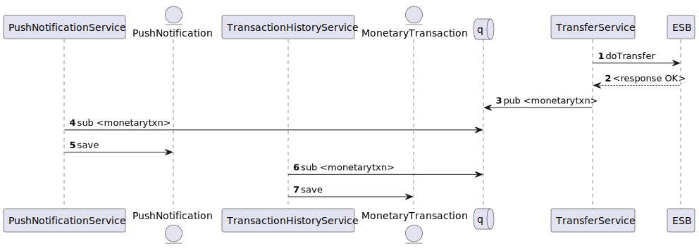

Tech Specs for JAMBHALA-2
Background & research
Normally, a rimaubank customer also has close family members or friends who are also rimaubank customer. This function allows the said rimaubank customer to send money to their family or friends. Extensive usage of this function means that funds stay and increase within maybank deposit accounts, maintaining or lowering the bank's cost of funds
Problem statement
As a rimaubank customer, I would like to do funds transfer from my rimaubank account to another rimaubank account so I can send money to my friends or family
Goals
- List goals
- Customer should need at most 4 steps to transfer money
- KPIs
- 1000 intrabank funds transfer between rimaubank accounts per month
- Total value of IDR 1Mio of funds exchanged between rimaubank accounts per month
Hypothesis
If we make it frictionless for customers to transfer money online between rimaubank accounts, customers are more likely to recommend their friends and family to open or maintain existing rimaubank account.
Scope
Explain the solution is, how it works and the extent of the work involved.
- Requirements > See JAMBHALA-2
- The customer must have a valid rimaubank online banking credentials
- The source account must have sufficient funds to transfer the money
- The recepient account must be a valid rimaubank account
- Upon successful transfer, the sender will receive a notification saying that the transfer to recipient is successful with amount and date
- When the sender checks their transaction history, the transfer activity must be reflected
- Future evolutions
- There must be a 2nd factor authentication to protect the sender from fraudsters
- There should be an option for customer to repeat the same transaction
- Out of scope
- Email notification
Technical solution
High Level Design
- Login should produce an Oauth Token that can be used to call the remaining API's
-
There should be 5 main API's representing each test steps
-
Balance Inquiry
- Account Holder name Inquiry
- Perform fund transfer
- Get new push notifications
- Get transaction history
API Internals
1. Balance Inquiry
GET /accounts/<account-number>/balance-inquiry
| Input | Output |
|---|---|
| account-number | { accountNumber, availableBalance } |
Security
- Bearer rimaubank JWT token with a valid custNo claim
Integrations
| Subsystem | Operation | Endpoint | Purpose |
|---|---|---|---|
| ESB | POST | http://${esb.host-name}:9010/account-service | To get account details |
2. Account Holder Inquiry
GET /accounts/<account-number>/holder-name
| Input | Output |
|---|---|
| account-number | { accountNumber, accountHolderName } |
Security - Bearer rimaubank JWT token
Integrations
| Subsystem | Operation | Endpoint | Purpose |
|---|---|---|---|
| ESB | POST | http://${esb.host-name}:9010/account-service | To get account details |
3. Perform Intrabank Transfer
POST /transfer/intrabank
| Input | Output |
|---|---|
| account-number | { accountNumber, accountHolderName } |
Security - Bearer rimaubank JWT token with a valid custNo claim
Integrations
| Subsystem | Operation | Endpoint | Purpose |
|---|---|---|---|
| ESB | POST | http://${esb.host-name}:9010/transfer-service | To perform funds transfer |
Events
| Transmitted | Consumed By |
|---|---|
| MonetaryTransaction | PushNotificationService, TransactionHistoryService |
Sequence 
4. Get New Push Notifications
GET /push-notifications/new
| Input | Output |
|---|---|
List({ message, isRead }) |
Security - Bearer rimaubank JWT token with a valid custNo claim
Entities
| Entity | Operation |
|---|---|
| PushNotification | Query |
5. Get Transaction History
GET /transaction-history
| Input | Output |
|---|---|
List({ txnId, amount, sourceAccount, destinationAccount, payeeName, transactionType, transactionDate, status }) |
Security - Bearer rimaubank JWT token with a valid custNo claim
Entities
| Entity | Operation |
|---|---|
| MonetaryTransaction | Query |
Entities
PushNotification
- custNo
- message
- isRead
MonetaryTransaction
- custNo
- amount
- sourceAccount
- destinationAccount
- payeeName
- transactionType
- transactionDate
- status
Open questions
- [ ] Should we notify the recipient of the incoming transfer?